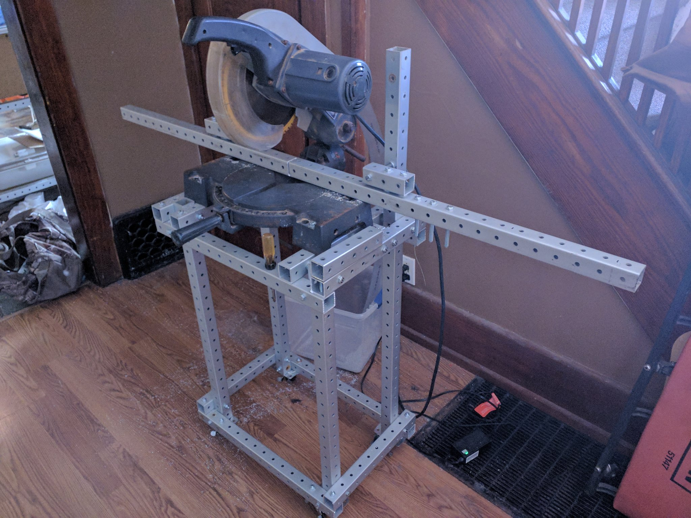
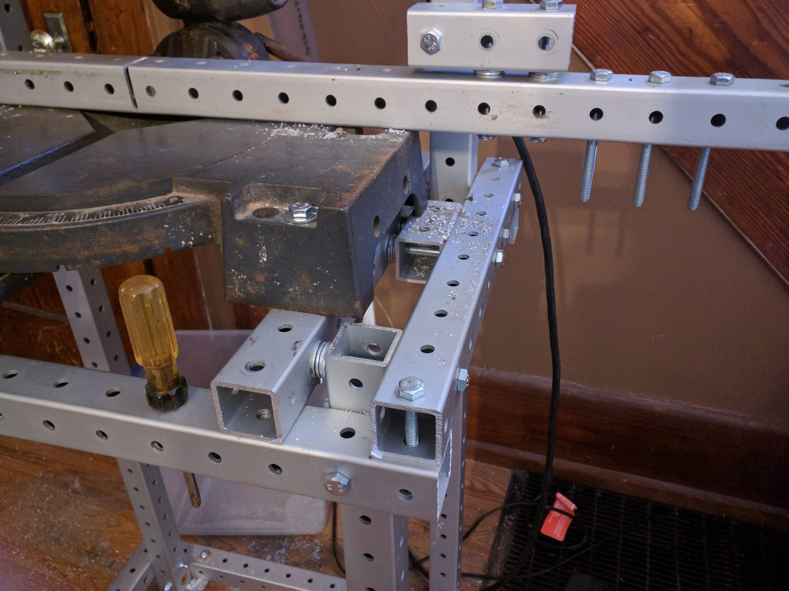
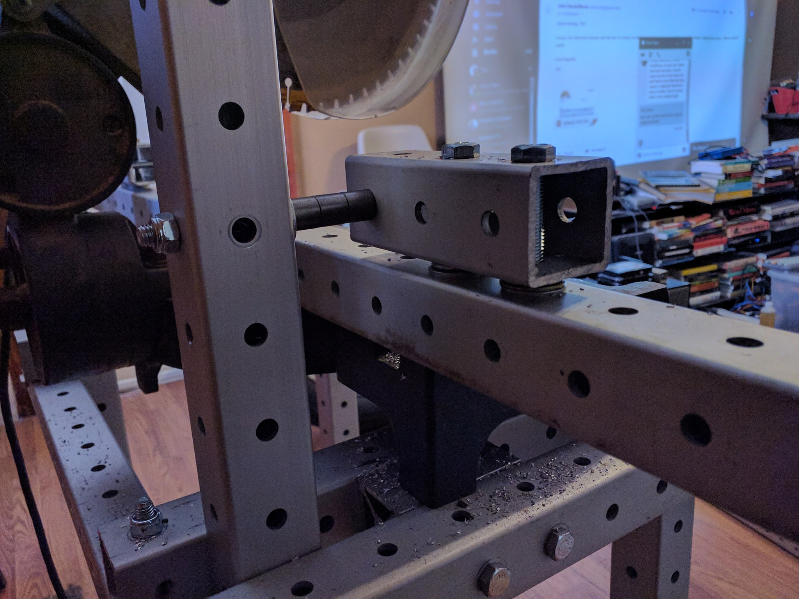
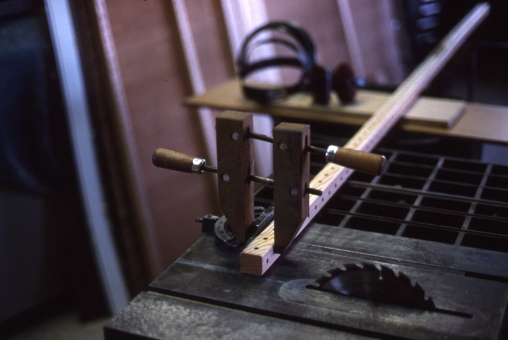
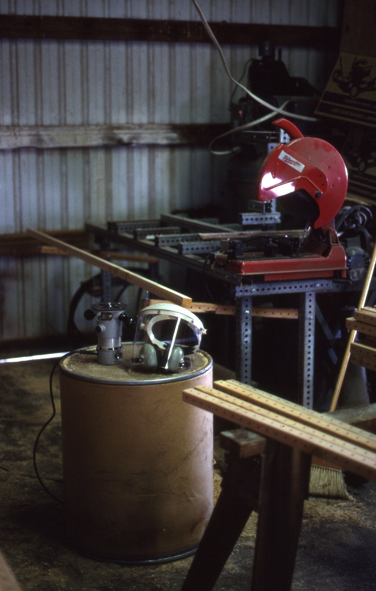

tool stands revision 2672





Challenges
Planing, ripping, or otherwise processing long wood, metal, or plastic raw materials requires supporting those materials along their length during processing.